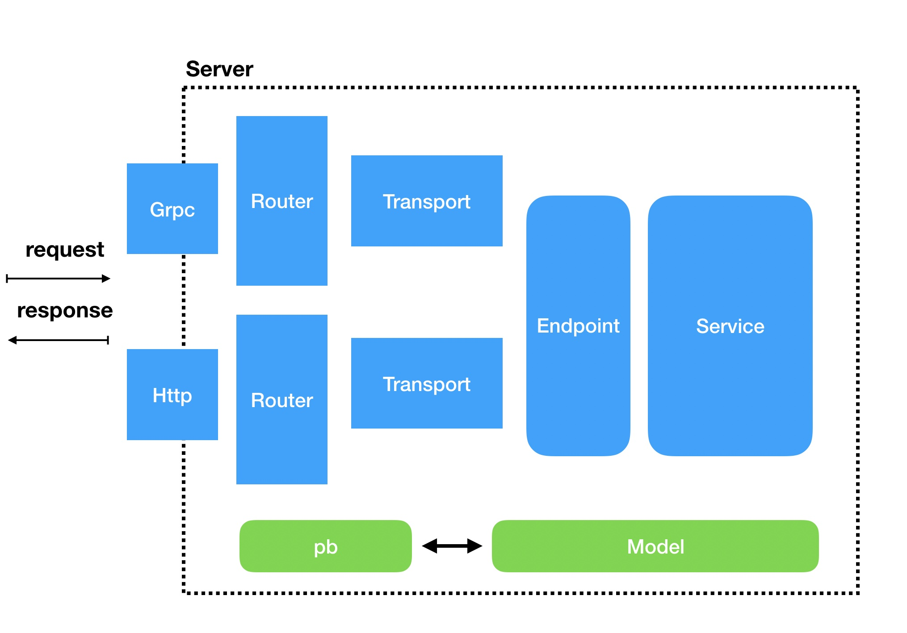

利用 go-kit 实现支持 http 和 grpc 的微服务
利用 go-kit 微服务框架实现一个同时支持 http 和 grpc 服务的应用。以一个最常见的文章服务为例，开始教程！
项目架子
go-kit 三层模型简介
go-kit 是一套开源的 golang 微服务工具集合。go-kit 自上而下提供了三层模型，分别是 Transport 层、Endpoint 层、Service 层。
- Transport 层：处理 HTTP、gRPC、Thrift 等协议相关的逻辑，主要对请求进行解码、对响应进行编码操作；
- Endpoint 层：在Service的上层作为业务的中间件，可使用限流、熔断、监控等能力；
- Service 层：用来处理业务逻辑；
项目初始化
感谢FengGeSe/demo 项目提供了一个很好工程 demo，本教程基于此仓库进行改造，教程代码于此go-kit-demo。

FengGeSe/demo项目在 go-kit 三层模型中，又增加了 Server 和 Router 层，前者作为服务启动，后者作为路由转发。
利用数据模型 Model 作为“中立”数据格式，同时兼容多协议的请求。
eg：
一个 http 请求到来，json 数据会转为 model，响应时 model 会转为 json。
一个 grpc 请求到来，protobuf 数据会转为 model，当响应时，model 会转为 protobuf。
项目目录结构
.
├── README.md
├── cmd // 提供client和server的入口
│ ├── client
│ └── server
├── conf // 配置相关
├── endpoint // endpoint层
│ └── article
├── errors // 错误处理
├── go.mod
├── go.sum
├── params // model层（在代码中使用params表示）
│ └── article
├── pb // pb层
│ └── article
├── router // 路由层。grpc和http注册路由的地方
│ ├── grpc
│ └── http
├── server // server层，启动服务的地方
│ ├── grpc
│ └── http
├── service // service层，处理业务逻辑的地方
│ └── article
├── static // 文档，文档图片相关
│ └── img
├── transport // transport, 数据转换的地方
│ ├── grpc
│ └── http
├── util // 工具方法
└── vendor // 三方依赖
下面进入开发！
Service 开发
定义接口
Service 层用来处理业务逻辑，一个 Service，由许多功能方法构成。拿一个最熟悉的文章服务来说，它将会提供增删改查的功能。
定义接口。定义 ArticleService 接口，规定 Service 要提供的方法。
// service/article.go
package service
import (
"context"
"demo/params/article_param"
"fmt"
)
type ArticleService interface {
Create (ctx context.Context, req *article_param.CreateReq) (*article_param.CreateResp, error)
Detail (ctx context.Context, req *article_param.DetailReq) (*article_param.DetailResp, error)
}
定义数据模型
要实现一个方法，我们就要先想好它的数据模型 model，明确它的入参和出参。为了区别 orm 的 model 层，在代码实现中数据模型 model 姑且称为 params，它主要来定义一个请求传入参数和传出参数。
// params/article_param/article.go
package article_param
type CreateReq struct {
Title string `json:"title"`
Content string `json:"content"`
CateId int64 `json:"cate_id"`
}
type CreateResp struct {
Id int64 `json:"id"`
}
type DetailReq struct {
Id int64 `json:"id"`
}
type DetailResp struct {
Id int64 `json:"id"`
Title string `json:"title"`
Content string `json:"content"`
CateId int64 `json:"cate_id"`
UserId int64 `json:"user_id"`
}
Service 具体实现
通过定义一个 articleService 结构体，实现 ArticleService 接口规划的所有方法。并通过 NewArticleService 方法将实现的 Service 暴露出去。
package service
import (
"context"
"demo/params/article_param"
"fmt"
)
// ArticleService 定义文章service接口，规定本service要提供的方法
type ArticleService interface {
Create (ctx context.Context, req *article_param.CreateReq) (*article_param.CreateResp, error)
Detail (ctx context.Context, req *article_param.DetailReq) (*article_param.DetailResp, error)
}
// NewArticleService new service
func NewArticleService() ArticleService {
var svc = &articleService{}
{
// middleware
}
return svc
}
// 定义文章service结构体，并实现文章service接口的所有方法
type articleService struct {}
func (s *articleService) Create (ctx context.Context, req *article_param.CreateReq) (*article_param.CreateResp, error) {
fmt.Printf("req:%#v\n", req)
// mock：insert 根据传入参数req插库生成Id
id := 1
return &article_param.CreateResp{
Id: int64(id),
}, nil
}
func (s *articleService) Detail (ctx context.Context, req *article_param.DetailReq) (*article_param.DetailResp, error) {
……
}
以创建文章方法为例，一个方法拿到 model 层定义的入参，然后执行具体逻辑，最终返回 model 层定义的出参。
一个 web 开发者，很容易想到一个 http 响应返回的参数应该是 json 格式，这里不同，这里响应的是 mdoel 层定义的 struct，它是一个中立的数据结构，只与开发语言有关。而 json 格式与 http 服务耦合，并不是所有的服务都用 json 来传递数据，像 grpc 服务，一般用 protobuf 来作为数据格式。所以，Service 层实现的方法入参和出参，既不是 json 也不是 protobuf message。
至于数据转换的问题，那是 transport 层该关心的事情（后文）。
Endpoint 开发
endpoint 层通过 Service 层暴露出来的 NewArticleService 方法进行调用。 endpoint 层在 Service 层之前，可以作为业务的中间件。它同样不关心请求是 http 还是 grpc 。
// endpoint/article/article.go
package article
import (
"context"
"demo/errors"
"demo/params/article_param"
service "demo/service"
"github.com/go-kit/kit/endpoint"
)
// make endpoint service -> endpoint
func MakeCreateEndpoint(svc service.ArticleService) endpoint.Endpoint {
return func(ctx context.Context, request interface{}) (interface{}, error) {
req, ok := request.(*article_param.CreateReq)
if !ok {
return nil, errors.EndpointTypeError
}
resp, err := svc.Create(ctx, req)
if err != nil {
return nil, err
}
return resp, nil
}
}
// make endpoint service -> endpoint
func MakeDetailEndpoint(svc service.ArticleService) endpoint.Endpoint {
……
}
HTTP + Json 开发
Transport 层
transport 层是在 endpoint 层之前，它主要作用是解析请求的数据，编码响应的数据。在这一层，就要区分请求是 http 还是 grpc了，毕竟两种服务请求的数据格式不同，需要分别处理。
在 transport 层要实现 decodeRequest、encodeResponse 和 http.Handler。
- decodeRequest 解析 http 请求传来的参数，转为“中立”的 model 结构；
- encodeResponse 将“中立”的 model 结构转为 json，或添加响应头之类的操作；
- handler 利用 go-kit 提供的 transport/http 的融合 decodeRequest、encodeResponse ，并调用 endpoint 层。
// transport/http/article/create.go
package article
import (
"context"
endpoint "demo/endpoint/article"
"demo/params/article_param"
"demo/service"
transport "demo/transport/http"
"encoding/json"
"fmt"
httptransport "github.com/go-kit/kit/transport/http"
"net/http"
)
// Server
// 1. decode request http.request -> model.request
func decodeCreateRequest(_ context.Context, r *http.Request) (interface{}, error) {
if err := transport.FormCheckAccess(r); err != nil {
return nil, err
}
if err := r.ParseForm(); err != nil {
fmt.Println(err)
return nil, err
}
req := &article_param.CreateReq{}
err := transport.ParseForm(r.Form, req)
if err != nil {
return nil, err
}
fmt.Printf("r.Form:%#v\n", r.Form)
fmt.Printf("req:%#v\n", req)
r.Body.Close()
return req, nil
}
// 2. encode response model.response -> http.response
func encodeCreateResponse(_ context.Context, w http.ResponseWriter, resp interface{}) error {
w.Header().Set("Content-Type", "application/json")
return json.NewEncoder(w).Encode(resp)
}
// make handler
func MakeCreateHandler(svc service.ArticleService) http.Handler {
handler := httptransport.NewServer(
endpoint.MakeCreateEndpoint(svc),
decodeCreateRequest,
encodeCreateResponse,
transport.ErrorServerOption(), // 自定义错误处理
)
return handler
}
Router + Server
router 层根据 url 转发到不同 transport 层
// router/httprouter/article.go
package httprouter
import (
svc "demo/service"
transport "demo/transport/http/article"
"net/http"
)
func RegisterRouter(mux *http.ServeMux) {
mux.Handle("/article/create", transport.MakeCreateHandler(svc.NewArticleService()))
mux.Handle("/article/detail", transport.MakeDetailHandler(svc.NewArticleService()))
}
server 层用来启动 http 服务，并引入 router。
// server/http/server.go
package http
import (
"demo/router/httprouter"
"net"
"net/http"
)
var mux = http.NewServeMux()
var httpServer = http.Server{Handler: mux}
// http run
func Run(addr string, errc chan error) {
// 注册路由
httprouter.RegisterRouter(mux)
lis, err := net.Listen("tcp", addr)
if err != nil {
errc <- err
return
}
errc <- httpServer.Serve(lis)
}
最后在一个统一的脚本中调用 http.Run 启动 http 服务。
// cmd/server/sever.go
package main
import http "demo/server/http"
func main() {
errc := make(chan error)
go http.Run("0.0.0.0:8080", errc)
// 等grpc服务完成后，在这里启动 grpc
log.WithField("error", <-errc).Info("Exit")
}
Grpc + Protobuf 开发
编写 protobuf
在 grpc 服务中，我们用 protobuf 来作为数据格式，所以第一步编写 protobuf。
在 protobuf 中，定义 service 和 message。基于数据模型 model 编写 protobuf mesage，基于 Service 层的 ArticleService interface 编写 protobuf service。
// pb/article/article.proto
syntax = "proto3";
option go_package = ".;proto";
service ArticleService {
rpc Create(CreateReq) returns (CreateResp);
rpc Detail(DetailReq) returns (DetailResp);
}
message CreateReq {
string Title = 1;
string Content = 2;
int64 CateId = 3;
}
message CreateResp {
int64 Id = 1;
}
message DetailReq {
int64 Id = 1;
}
message DetailResp {
int64 Id = 1;
string Title = 2;
string Content = 3;
int64 CateId = 4;
int64 UserId = 5;
}
proto 文件和数据模型 model 很像，但不要把它们混为一谈。 model 是“中立的”。
proto 文件具体表示什么意思呢？
service 关键字规定了一个 grpc 的服务，它提供了两个方法 Create 和 Detail。message 关键字规定了消息结构，它由类型 变量名 = 序号组成，最终传递 protobuf 是二进制格式，只编码值，不编码变量名， 所以需要序号来解析对应的变量。
当客户端调用 ArticleService 服务的 Create 方法时，需要传入 CreateReq 结构的参数集合，服务端将会返回 CreateResp 结构的参数集合。
生成 pb 文件，在pb/article/目录下，执行如下命令：
protoc --proto_path=./ --go_out=plugins=grpc:./ ./article.proto
生成的 Go 版本的 pb 文件，如下。
这是 article.pb.go 中的 Server 代码，供服务端使用。
// pb/article/article.pb.go
……
// ArticleServiceServer is the server API for ArticleService service.
type ArticleServiceServer interface {
Create(context.Context, *CreateReq) (*CreateResp, error)
Detail(context.Context, *DetailReq) (*DetailResp, error)
}
// UnimplementedArticleServiceServer can be embedded to have forward compatible implementations.
type UnimplementedArticleServiceServer struct {
}
func (*UnimplementedArticleServiceServer) Create(context.Context, *CreateReq) (*CreateResp, error) {
return nil, status.Errorf(codes.Unimplemented, "method Create not implemented")
}
func (*UnimplementedArticleServiceServer) Detail(context.Context, *DetailReq) (*DetailResp, error) {
return nil, status.Errorf(codes.Unimplemented, "method Detail not implemented")
}
func RegisterArticleServiceServer(s *grpc.Server, srv ArticleServiceServer) {
s.RegisterService(&_ArticleService_serviceDesc, srv)
}
这是 article.pb.go 中的 Client 代码，pb 文件会给到客户端，Client 代码会供客户端使用。
// pb/article/article.pb.go
……
// ArticleServiceClient is the client API for ArticleService service.
//
// For semantics around ctx use and closing/ending streaming RPCs, please refer to https://godoc.org/google.golang.org/grpc#ClientConn.NewStream.
type ArticleServiceClient interface {
Create(ctx context.Context, in *CreateReq, opts ...grpc.CallOption) (*CreateResp, error)
Detail(ctx context.Context, in *DetailReq, opts ...grpc.CallOption) (*DetailResp, error)
}
type articleServiceClient struct {
cc grpc.ClientConnInterface
}
func NewArticleServiceClient(cc grpc.ClientConnInterface) ArticleServiceClient {
return &articleServiceClient{cc}
}
func (c *articleServiceClient) Create(ctx context.Context, in *CreateReq, opts ...grpc.CallOption) (*CreateResp, error) {
out := new(CreateResp)
err := c.cc.Invoke(ctx, "/ArticleService/Create", in, out, opts...)
if err != nil {
return nil, err
}
return out, nil
}
func (c *articleServiceClient) Detail(ctx context.Context, in *DetailReq, opts ...grpc.CallOption) (*DetailResp, error) {
out := new(DetailResp)
err := c.cc.Invoke(ctx, "/ArticleService/Detail", in, out, opts...)
if err != nil {
return nil, err
}
return out, nil
}
Transport 层
接下来实现 grpc 服务的 transport 层。
在 transport 层要实现 decodeRequest、encodeResponse 和 grpc.Handler。
- decodeRequest 解析 grpc 请求的 protobuf，转为“中立”的 model 结构；
- encodeResponse 将“中立”的 model 结构转为 protobuf；
- handler 利用 go-kit 提供的 transport/grpc 的融合 decodeRequest、encodeResponse ，并调用 endpoint 层。
// transport/grpc/article/create.go
package article
import (
"context"
"demo/params/article_param"
pb "demo/pb/article"
"fmt"
)
// 1. decode request pb -> model
func decodeCreateRequest(c context.Context, grpcReq interface{}) (interface{}, error) {
req, ok := grpcReq.(*pb.CreateReq)
if !ok {
fmt.Println("grpc server decode request出错！")
return nil, fmt.Errorf("grpc server decode request出错！")
}
// 过滤数据
request := &article_param.CreateReq{
Title: req.Title,
Content: req.Content,
CateId: req.CateId,
}
return request, nil
}
// 2. encode response model -> pb
func encodeCreateResponse(c context.Context, response interface{}) (interface{}, error) {
fmt.Printf("%#v\n", response)
resp, ok := response.(*article_param.CreateResp)
if !ok {
return nil, fmt.Errorf("grpc server encode response error (%T)", response)
}
r := &pb.CreateResp{
Id: resp.Id,
}
return r, nil
}
grpc 服务的 transport 层和 http 服务的 transport 层类似，除此以外还需要一点“胶水”将 grpc 和 go-kit 融合。
// transport/grpc/article/article.go
package article
import (
"context"
endpoint "demo/endpoint/article"
pb "demo/pb/article"
"demo/service"
grpctransport "github.com/go-kit/kit/transport/grpc"
)
// ArticleGrpcServer 1.实现了 pb.ArticleServiceServer 的所有方法，实现了”继承“;
// 2.提供了定义了 create 和 detail 两个 grpctransport.Handler。
type ArticleGrpcServer struct {
createHandler grpctransport.Handler
detailHandler grpctransport.Handler
}
// 通过 grpc 调用 Create 时，Create 只做数据传递, Create 内部又调用 createHandler，转交给 go-kit 处理
func (s *ArticleGrpcServer) Create (ctx context.Context, req *pb.CreateReq) (*pb.CreateResp, error) {
_, rsp, err := s.createHandler.ServeGRPC(ctx, req)
if err != nil {
return nil, err
}
return rsp.(*pb.CreateResp), err
}
func (s *ArticleGrpcServer) Detail (ctx context.Context, req *pb.DetailReq) (*pb.DetailResp, error) {
_, rsp, err := s.detailHandler.ServeGRPC(ctx, req)
if err != nil {
return nil, err
}
return rsp.(*pb.DetailResp), err
}
// NewArticleGrpcServer 返回 proto 中定义的 article grpc server
func NewArticleGrpcServer(svc service.ArticleService, opts ...grpctransport.ServerOption) pb.ArticleServiceServer {
createHandler := grpctransport.NewServer(
endpoint.MakeCreateEndpoint(svc),
decodeCreateRequest,
encodeCreateResponse,
opts...,
)
articleGrpServer := new(ArticleGrpcServer)
articleGrpServer.createHandler = createHandler
return articleGrpServer
}
ArticleGrpcServer 的作用
1.实现了 pb.ArticleServiceServer 接口的所有方法，实现了”继承“，也可以说 ArticleGrpcServer 的实例是一个 pb.ArticleServiceServer 类型。
2.提供了定义了 create 和 detail 两个 grpctransport.Handler。 目的是为了对接 go-kit 的模型。
当通过 grpc 调用 Create 方法时，Create 只做数据传递, Create 内部又调用 createHandler，这样请求就转交给 go-kit 处理了。
NewArticleGrpcServer的作用 返回 proto 中定义的 article grpc server，将 grpc 服务暴露出去，供外层的 grpc router 调用，它融合了多个 handler。
go-kit 的 Handler 调用 endpoint、decodeRequest、encodeResponse。
createHandler := grpctransport.NewServer(
endpoint.MakeCreateEndpoint(svc),
encodeCreateResponse,
decodeCreateRequest,
opts...,
)
Router + Server
在 router 层将 transport 层暴露的服务注册进来。
// router/grpcrouter/article.go
package grpcrouter
import (
pb "demo/pb/article"
"demo/service"
transport "demo/transport/grpc/article"
"google.golang.org/grpc"
)
func RegisterRouter(grpcServer *grpc.Server) {
pb.RegisterArticleServiceServer(grpcServer, transport.NewArticleGrpcServer(service.NewArticleService()))
}
server 层引入 router 层，启动 grpc 服务。
// server/grpc/server.go
package grpc
import (
"demo/router/grpcrouter"
"net"
grpc_middleware "github.com/grpc-ecosystem/go-grpc-middleware"
"google.golang.org/grpc"
)
var opts = []grpc.ServerOption{
grpc_middleware.WithUnaryServerChain(
RecoveryInterceptor,
),
}
var grpcServer = grpc.NewServer(opts...)
func Run(addr string, errc chan error) {
// 注册grpcServer
grpcrouter.RegisterRouter(grpcServer)
lis, err := net.Listen("tcp", addr)
if err != nil {
errc <- err
return
}
errc <- grpcServer.Serve(lis)
}
最后在一个统一的脚本中调用 grpc.Run 启动 grpc 服务和之前实现的 http 服务。
// cmd/server/sever.go
package main
import http "demo/server/http"
import grpc "demo/server/grpc"
func main() {
errc := make(chan error)
go http.Run("0.0.0.0:8080", errc)
go grpc.Run("0.0.0.0:5000", errc)
log.WithField("error", <-errc).Info("Exit")
}
运行脚本
go run cmd/server/sever.go
完成！
参考
https://github.com/FengGeSe/demo